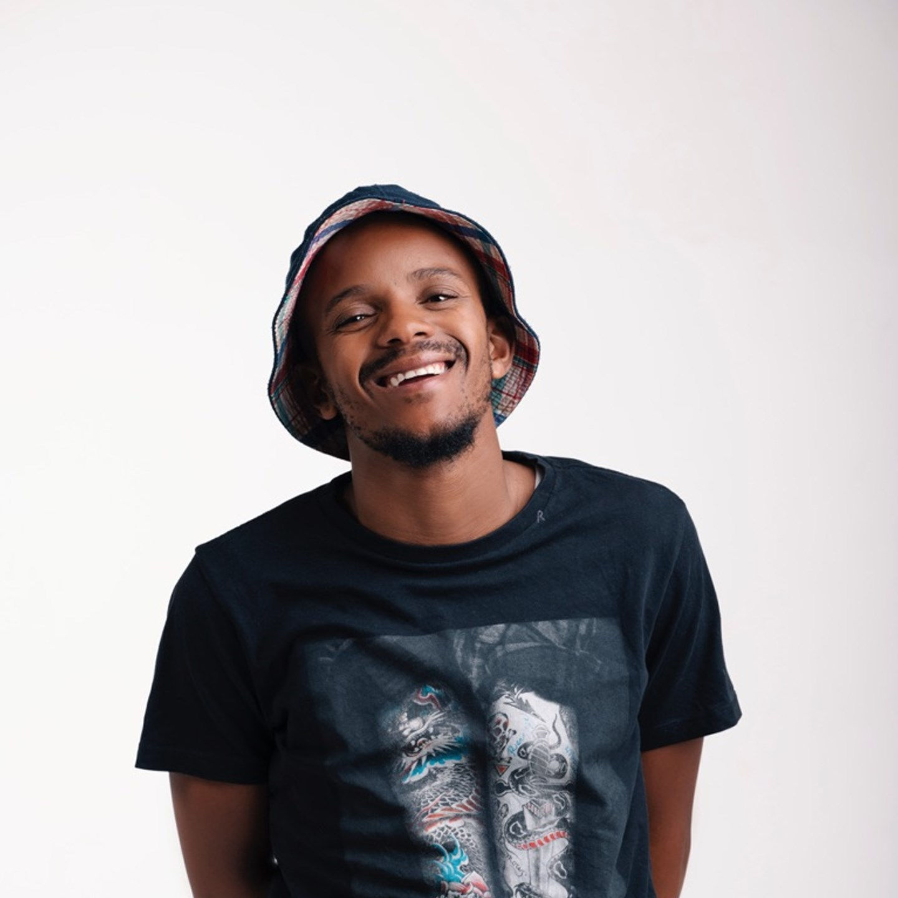
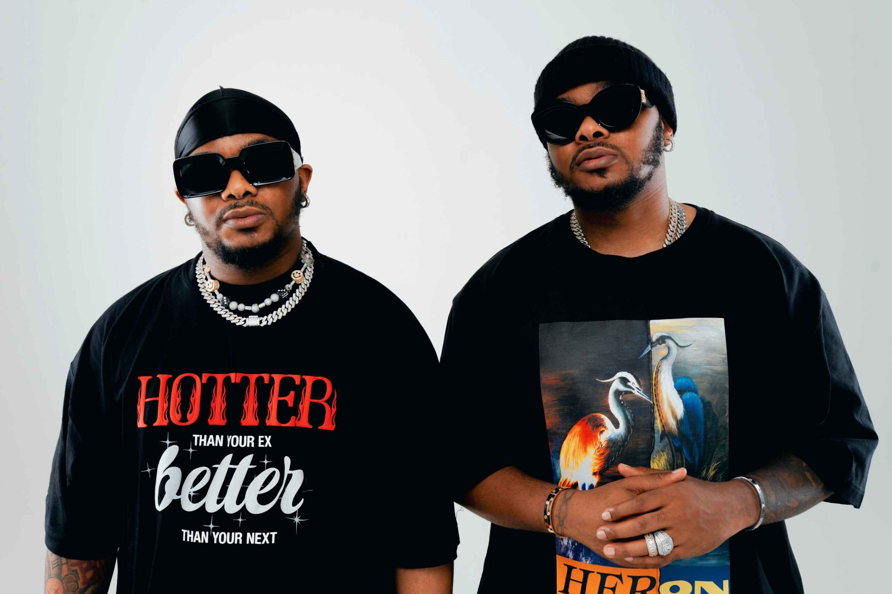
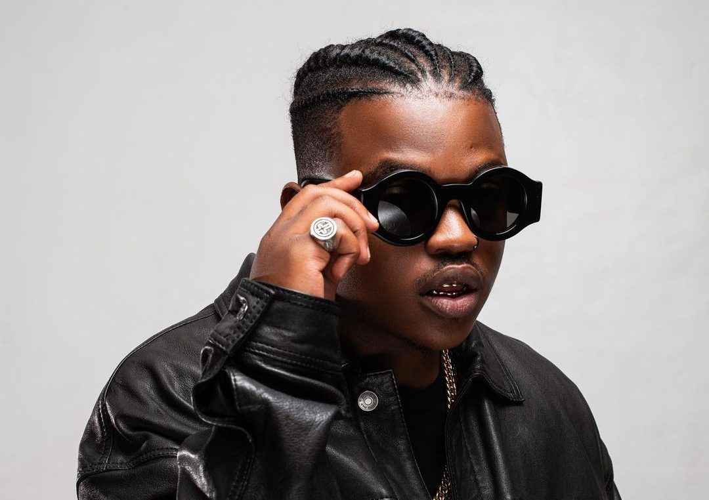
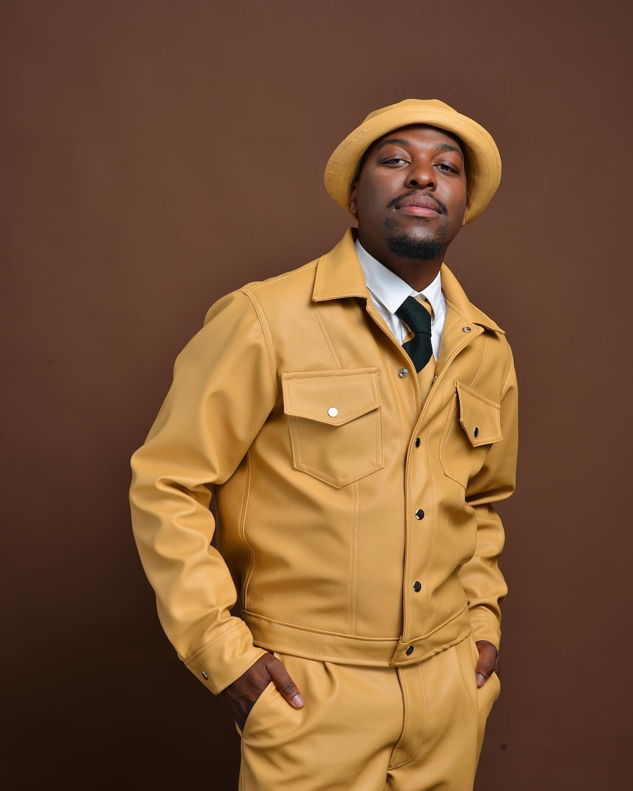
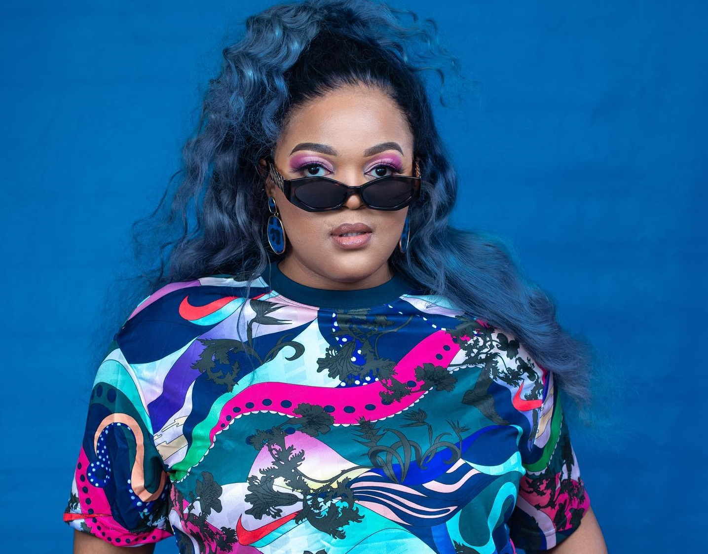
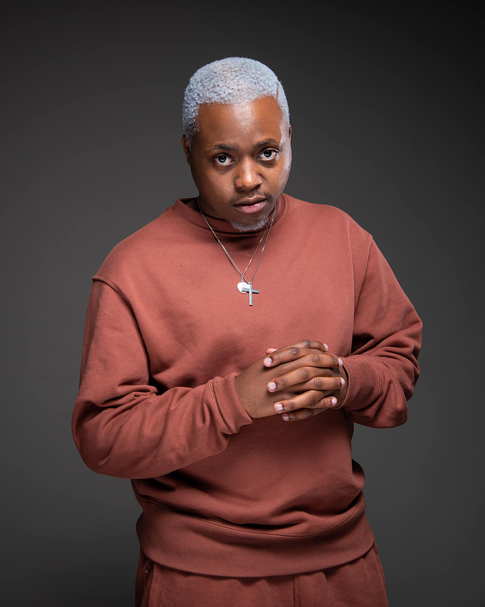
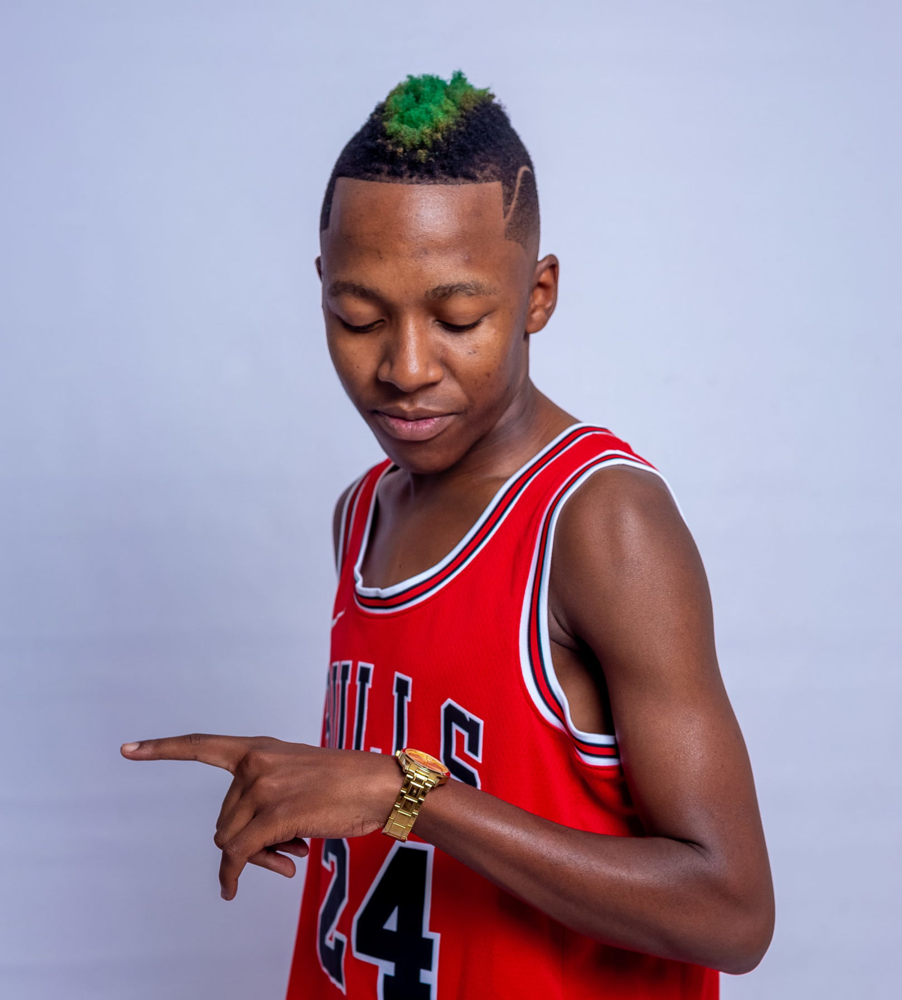
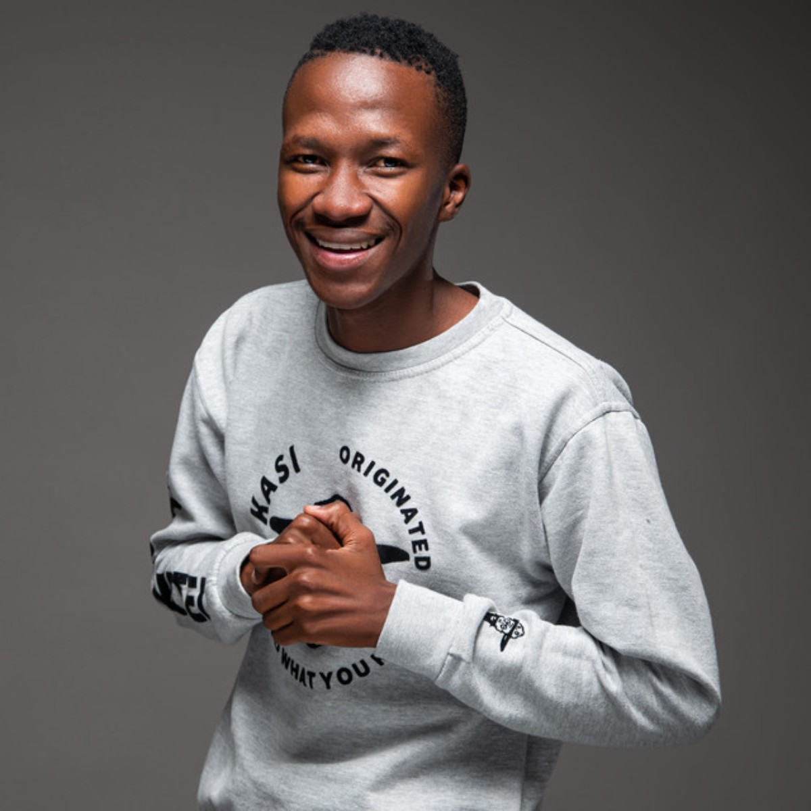

Amapiano
What is amapiano?
Amapiano (isizulu for "the pianos") is a style of house music that emerged in South Africa in 2012. It is a hybrid of deep house, jazz and lounge music characterized by synths, airy pads and wide percussive basslines. It is distinguished by high-pitched piano melodies, 'log drum' basslines, low tempo 90s South African house rhythms and percussion from another local subgenre of house known as Bacardi.
History
Although the genre gained popularity in Katlehong, the township east of Johannesburg, there is a lot of ambiguity and debate concerning its origins, with various accounts of the musical styles in the Johannesburg townships - Soweto, Alexandra, Vosloorus and Katlehong. Because of the genre's similarities with Bacardi, some people assert the genre began in Pretoria. Various accounts as to who formed the popular genre make it impossible to accurately pinpoint its origins.
In 2019, the genre experienced increased popularity across the African continent with noted increases in digital streams and chart successes in countries far from its South African origin. It has since expanded to reach an international audience.
Key Artists
Kabza De Small
Kabza is known as the 'King of Amapiano'. Perhaps the most versatile producer in the genre, he is one half of the Scorpion Kings production duo alongside DJ Maphorisa.
Recommended listening:
Major League DJz
Major League DJz consists of twins Bandile and Banele. The duo shot to fame over lockdown with their Boiler Room-style 'Balcony Mix' videos introducing amapiano music, style and dance to an international audience.
Recommended listening:
Focalistic
While amapiano suits a range of vocal styles, rapper Focalistic has arguably become the genre's most distinctive voice. He rose to prominence in 2020 with his single 'Ke Star', which later become a cross-continental hit when it was remixed by Nigerian superstar Davido.
Recommended listening:
Mr JazziQ
Mr JazziQ was initially known as one half of DJ and production duo JazziDisciples with Josiah De Disciple. Since 2020, JazziQ has become of amapiano's most influential DJs and social media personalities.
Recommended listening:
De Mthuda
Known for his deep house-influenced sound, De Mthuda is the mastermind behind many of amapiano's biggest crossover hits including 'Shesha', 'Emlanjeni' and 'John Wick'.
Recommended listening:
DBN Gogo
DBN Gogo is one of amapiano's most highly respected DJs and the genre's most prominent female producer. She comes from a powerful family: Cyril Ramaphosa, the current South African president, is her uncle.
Recommended listening:
Kelvin Momo
Kelvin Momo is known as the king of 'private school piano', a subgenre of amapiano that takes influence from jazz and lounge music. His tracks have a smooth, laid back atmosphere.
Recommended listening:
Vigro Deep
One of amapiano's most inimitable talents, Vigro Deep was the prodigy behind many of the genre's breakout hits when he was still in his teens. He is known for his aggressive and virtuosic keyboard solos and drum programming.
Recommended listening:
Mdu aka TRP
Mdu aka TRP is a pioneering amapiano producer known for his futuristic spin on the style. He is credited by Kabza De Small as the inventor of the iconic 'log drum' bassline sound.
Recommended listening: